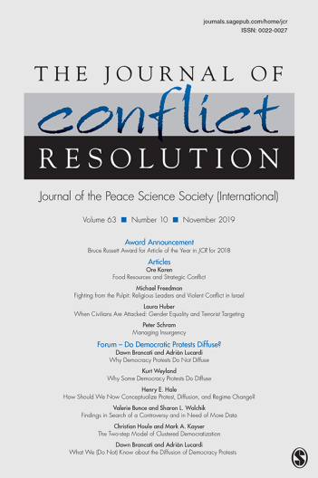

收录于合集

作品简介
【作者】 尹伟文是美国德州A&M大学政治系博士生，研究兴趣包括国际政治经济学、国际法与国际组织、冲突研究、亚太国际关系、经济史和量化研究方法。
【 编译】 徐垚晟（美国加利福尼亚大学圣迭戈分校硕士生）
【校对】 李源
【审核 】 房宇馨
【排版】 柯晗燕
【 来源 】
Yin,W. (2019).Climate Shocks, Political Institutions,and Nomadic Invasions inEarly Modern East Asia. Journal of Conflict Resolution. Retrieved from https://doi.org/10.1177/0022002719889665
期刊介绍

Journalof Conflict Resolution ，《冲突解决杂志》是一本融合了社会科学理论和人类冲突研究的跨学科杂志。JCR着眼于国家之间和国家内部的冲突，但也探索各种可能有助于理解战争与和平问题的群体间和人际冲突。
**现代早期东亚的气候冲击、政治制度与游牧入侵 **
Climate Shocks,Political Institutions, and Nomadic Invasions in Early Modern East Asia
摘要
大量的研究结论表明气候恶化会引发冲突，但最近的发现表明，温和的气候条件也会引发冲突。 本文作者认为，与分权型社会相比，在气候恶化的影响下，集权型社会有更强的战争动员能力。因此，集权型社会更有可能发动战争来解决由气候恶化造成的资源稀缺问题。此外，在气候条件温和的情况下，集权型社会几乎没有动机去掠夺，因为它们可以通过集权型制度定期收税。 本文采用集权化倾向的满洲入侵和分权化倾向的蒙古族入侵作为实证检验。 作者发现，在满洲集权化改革后，气温与其入侵概率呈现负相关关联，反之，气温与蒙古族入侵概率呈现正相关关联。
文章导读
近年来，气候变化与政治暴力之间的联系越来越受到学者和决策者们的关注。许多专家担心，在现今全球气候变化的影响下，在生态脆弱的地区，内战和国际冲突可能会更为频繁且更为剧烈。虽然学者们通常认为恶劣的气候条件会导致更多的冲突（Hsiang，Burke，andMiguel 2013），但最近的发现表明，这不一定是正确的（Devlin and Hendrix 2014；Detges2014；Landis 2014；Slettebak2012）。例如，由于充足的降水可以满足军事行动的基本需求，并创造有利于军事袭击的战略环境，因此雨水丰沛会引发更多的冲突（Detges 2014；Salehyanand Hendrix 2014）。
理论与现实之间的冲突要求建立一个条件理论，该理论可以解释为什么气候恶化有时会引发冲突，而在其他情况下却会抑制冲突。 本文中，作者提出了一个条件理论（ conditional theory ），该条件理论确定了气候恶化情况下（或者没有气候恶化）可以增加战争发生可能性的社会条件（更具体地说是制度条件）。 作者认为，气候恶化所造成资源稀缺的社会不一定会诉诸暴力。是否发动战争取决于在气候恶化（极端寒冷或极端干旱）的影响下，游牧民族是否能够调动足够的资源用于战争。换句话说，气候恶化不仅影响发动战争的意愿，而且影响发动战争的可行性。
为了检验其所提出的条件理论，作者考察了东亚的两个游牧民族（蒙古族和满洲）如何对发生在1368-1840年之间的气候恶化做出反应。
本文所提出的条件理论，即政治制度作为气候—冲突联系中的调节变量（moderating variable），也可以被应用在当代的国内/国际冲突研究中。当代社群暴力参与者与游牧民族类似，都严重依赖于第一产业（primary sector），而第一产业对气候变化是高度敏感的。但是，即使如此，他们对于气候恶化的回应并不是仅取决于气候恶化的严重程度，还受到其他一系列的社会因素制约。各冲突参与方内部制度的差异，尤其在汲取能力（extractive capacity）方面，会导致战争倾向和结果的不同。如果条件理论是正确的话，我们可以预判，拥有坚实的管理和军队制度的冲突参与方（无论是政府军还是反政府军），在面对气候恶化时，会更愿意发动战争。（Huang 2016）
【注】此外，在本文编译中发现，由于Manchurian一词无法区分“满洲”与“满族”两词，因此在英译汉过程中可能会带来诸多歧义，小编认为需要特别注意。一般而言，1635年皇太极改“女真”为“满洲”。虽然有许多学者习惯性地把“满洲”一词的出现与满族的形成直接联系在一起，但首先满洲中“民族”这一概念是近代以后才产生在中国的；其次满洲的自我主观认同意识和自我归属意识是逐渐演变而形成的，从满洲到前现代的民族共同体经历了一个演化的过程。因此，小编认为译为满洲（人）更贴切。
参考资料：孙静：《满洲形成的再思考：清中期满洲认同意识研究》，复旦大学博士学位论文2005年。
****一、 条件理论 （ A Conditional Theory） ****
作者提出的条件理论， 专注于解释气候条件对冲突发起的影响是如何被政治制度调节的（特别是集权化水平） 。集权化水平会决定国家能力的两个方面——军队能力和汲取能力，并与气候条件一起影响冲突发生的可能性。第一，是否发动战争取决于政治制度在气候恶化时的表现，特别是在那些与军事效率和动员能力有关的方面。第二，当没有气候恶化时，政治制度也很重要，因为集权型制度可以帮助国家获得稳定的收入，这使得在温和的气候条件下对外掠夺的吸引力降低。作者称之为集权型国家的汲取能力。
动员能力在冲突中至关重要，因为它直接影响战争的结果（Tarar 2013）。如果冲突参与方无法达到军事行动所必需的最低动员要求，那么即使急于发动进攻，战争的发起也根本不具备可行性。
动员能力在很大程度上取决于集权化水平（Brewer 2002；Gennaioli and Voth 2015；North1990）。即使在气候恶化的情况下，相对于分权型社会，集权型社会也能够调动更多的资源（人力和物力）用于战争。
集权化的政治制度不仅影响一个国家或叛军的军事能力，而且还能增强其汲取能力。首先，在集权化的官僚体系的帮助下，精英们可以保护普通民众，并给予他们更强的投资和生产动力。其次，通过定期征税，精英们可以获得稳定的收入（Olson 1993）。换句话说，集权制度的存在与否不仅决定了冲突参与方如何应对气候恶化，而且还影响着他们在温和的气候条件下作出反应。
二、 历史背景与假设
（ HistoricalBackground and Hypotheses ）
作者选取了两个游牧民族（蒙古族与满洲）来观察政治制度在气候与冲突因果关系中的调节作用。具体来说，作者主要关注两个游牧民族对气候恶化的反应。 蒙古人与满洲人有许多相似之处。第一，他们面对同样的主要敌人——汉族。第二，由于蒙古人的游牧生活方式和满洲人对狩猎和捕鱼的依赖，他们对气候变化都很敏感。 （Liu2007，121；Qu 2006，volume8） 第三，蒙古族与满洲所处位置的气候条件非常相似，因其纬度相近，并且都受东亚的季风气候影响。 因此，除却政治制度的发展不同，两者之间的比较是有意义的。
在元朝于1368年被明朝击败后，蒙古人撤退回北方，恢复了游牧生活方式。从1368年开始，蒙古部落就陷入了分裂状态。在14世纪末期，元朝灭亡后的残余政权北元朝分裂为许多的小部落国。尽管达延汗（Dayan Khan）在15世纪后期重新整合了蒙古东部，但他将帝国在其诸子及宗族姻亲中进行分封，因此蒙古社会在他的统治下呈现出高度分权的状态（Wada 1984，364）。 换句话说，蒙古更像是中世纪欧洲这样的封建社会，而不是一个统一的政治实体。
与蒙古人相比，居住在中国东北的满洲人在建立集权制度方面（16、17世纪之交）取得了更大的进步。然而，在16世纪末部落首领努尔哈赤（Nurhaci）掌权之前，满洲地区还没有统一的政治实体，只有小型部落或家族型部落联盟，满洲部落与蒙古族的部落相似。
1583 年，因参与跨境贸易而受到儒家文化深刻影响的努尔哈赤成为了女真部落的酋长，之后满洲开始发生巨大变化。集权式机构开始出现在满洲地区。后来，努尔哈赤的儿子皇太极（ Hong Taiji） 将汉族政权的官僚制度引入满洲，赋予儒学家重要地位，并进一步推动了集权化进程。 满洲的集权化改革取得了很大的成果，一方面，极大地增强了满洲的军事能力，使他们能够掠夺农业地区，以解决由气候恶化导致的资源稀缺问题。另一方面，只要气候条件足够好，有足够的资源产出，满洲精英阶层就可以通过集权制度和机构定期收税，从而获取收入（Liu 2007，241-43）。
基于以上，作者提出了两个假设：
假设一（分权型社会）：蒙古族入侵的可能性与气温 / 降水量呈正相关。
假设二（集权型社会）：满洲入侵的可能性与气温 / 降水量呈负相关，但是这种关联应该仅在满洲集权化改革之后才存在。随着集权化水平的提升，气温 / 降水量对冲突发生可能性的边际影响递减。
三、研究设计与结论 （ Research Design and Results） ****
作者使用分割样本（splitsamples）（一个是蒙古族，另一个是满洲）估计基线结果（baseline results），分析单位为年份。
在对蒙古族和满洲入侵的分析中，如果存在游牧入侵，则因变量等于1，否则为0。在1368年至1840年间，蒙古族有114年存在入侵行为。其中，在1644年（即满洲建立的清朝取代明朝）之前，蒙古有110年存在入侵行为，而满洲（针对明朝或朝鲜的入侵）有29年存在入侵行为。游牧民族发起的冲突通常每年爆发一次，因此作者对因变量采用了二元赋值（binary measure）。
第一个主要的自变量是气温。 数据基于415个准确标明日期的代用气候指标，气温变量的单位是摄氏度。 第二个主要的自变量是降水量。 数据是基于年轮数据以及中国气象局创建的历史干旱和洪水指数。数据反映了降水量的绝对水平。
作者控制了定居者（如明朝、清朝和朝鲜王朝）发动进攻的变量。 由于定居者发起冲突的可能性也与气候条件相关，因此忽略此变量可能导致估算结果不一致（Bai and Kung 2011）。为了控制这样的情况，作者添加了一个虚拟变量（dummy variable），如果定居者攻击游牧民族，则该变量等于1，否则为0。
作者在表1中给出了因变量和自变量的概要统计数据。在图1中，作者依据游牧民族入侵的二元赋值绘制了随时间变化的气温和降水量图。左上方的图表明，随着气温的升高（如1540至1570年），蒙古族入侵的可能性变大；右上方的图则表明，满洲入侵主要发生在气温持续下降的17世纪上半叶。但是，底部的两张图没有清晰显示出降水量与游牧民族入侵之间的关系。
接下来，作者使用统计方法量化地考察两个游牧民族对气候变化的不同反应。
蒙古族入侵（Mongol Invasion）
由于因变量具有二元结果，因此作者使用了logit模型。表2中列出了基于蒙古样本的估算结果。三次多项式逼近（Cubic polynomial approximation）也被包含在方程的右侧，以解决时间序列自相关（temporal autocorrelation）的问题（Carter and Signorino 2010）。 结果表明，当气候恶化时，蒙古族不太可能南侵，但在温和气候条件下，蒙古族会变得好战。另一方面，降水量对蒙古族入侵的可能性没有统计学上的显著影响。表 2 表明了气温对蒙古族入侵概率的平均边际效应（ average marginal effect ， AME ）：气温每升高 0.1 摄氏度，蒙古入侵的概率就会增加 11.4% （见图 2 ）。
此外，还有充分证据表明，蒙古族入侵的可能性与定居者发动攻击呈负相关。换句话说，如果定居者在某一年向蒙古人发动战争，蒙古则不太可能在同一年反击。在这种情况下，蒙古人面临着强大的敌人，因此没有很强的入侵动机。这与对满洲入侵的分析结果不同。
满洲入侵（Manchurian Invasion）
作者使用两种度量方式来衡量作为调节变量的政治制度。 第一个是二分法，使用虚拟变量， 1583 年（努尔哈赤整合女真部落并建立集权制度）后等于 1 ， 1583 年前为 0 。
但是，国家建立通常是一个很耗时的事情。因此， 作者还对集权化水平进行了连续度量（ continuous measure ）。作者使用“旗”（满洲基本的行政和军事单位）的数量作为指标。 “旗”数量的增加表明满洲的国家机构变得越来越复杂和集中。
国家建立对于许多其他因素是内生性的，因为国家可能会采用集权化来应对外部威胁。但是，这种内生性问题并不一定会不利于推断。由于对不同集权化水平的交互项系数（coefficient on theinteraction term）和气温的边际效应（外衍给定的exogenously given）极为感兴趣，政治制度的内生性并不能妨碍我们不断地检验它是否是气候—冲突关系中的一个调节变量。
表3列出了以满洲入侵为因变量的逻辑回归（logistic regression）结果。如果满洲攻击明朝或朝鲜，因变量编码为1，否则为0。在模型3中，作者对制度使用二分法，1583年后取值1。在模型4中，作者对集权化水平使用连续度量，该指标由“旗”的数量表示。
两个模型中，制度变量和气温之间的交互项均有负属性（negative sign）。 这些结果表明，政治制度确实减轻了气温对满洲入侵可能性的影响：随着集权化水平的提升（从 0 到 1 或连续增加），气温的边际效应递减。
图3表明了基于模型3和模型4在不同集权化水平下的气温的平均边际效应。左图表明，由于集权制度的存在，气温与满洲入侵的可能性呈负相关。基于模型4的AME图表明了相似的模式：随着集权化水平的提升，气温的边际效应减弱。这两张图都表明，当气温升高时，集权化改革之前的满洲不太可能攻击定居者。
降水量对满洲的战争倾向没有独立影响（independenteffect）。与蒙古族一样，满洲对降水量的变化并不敏感。但是，与蒙古族不同，明朝发动袭击与满洲入侵的可能性呈正相关关联。此外，没有证据表明朝鲜王朝发动袭击也可能增加满洲入侵的可能性。换句话说，与蒙古族不同，满洲经常以暴力手段回应定居者的军事进攻。
基于两个分割样本的实证分析证实了假设1和假设2。总之，蒙古族和满洲对气候恶化引起的资源稀缺问题的反应不同。游牧民族是否对气候恶化做出强烈的反应取决于他们是否有可以大大提升动员能力的集权制度的支持。此外，他们对温和气候的反应也有所不同，因为在没有气候恶化的情况下，集权制度可以产生稳定的税收收入，这超过发动战争的收益。
同时，历史证据也支持了作者的理论。 自1595年开始，中国和朝鲜的档案记录了满洲地区发生的一系列严重饥荒，而且还记录了努尔哈赤在17世纪的前十年几乎每年都向明朝递交请愿书，以借用和交易粮食。1618年，努尔哈赤公开向明朝宣战。一位历史学家认为，这场战争本质上是为了转移内部矛盾，是为了克服由饥荒引起的经济和社会危机而发起的（Yan 2006，176-77）。皇太极在位期间气温持续下降，同时，集权化进程继续推进。皇太极于1626年继任后金大汗之后，他在各“旗”内任命了40名高级将领。结果，部落首领对满洲军队的影响被大大削弱了（Liu 2007，248）。1628年，皇太极要求朝鲜王朝提供粮食援助。遭到拒绝后，他决定采取冒险行动，并率新近改制的八旗（Eight Banners）直接攻击明朝的都城北京。他的军队成功突破了长城，洗劫了京城周遭。尽管满洲人暂时被赶回，但“抢西边（razing the west）”已成为满洲战士的口号（Wang2008）。大约在同一时间，蒙古族也遭受恶劣天气的困扰。许多蒙古部落没有掠夺农业地区，而是逃往满洲地区，成为满洲的一部分，这给粮食供应带来了进一步的压力（Wang 2008）。与蒙古不同，高度中央集权的国家机构保证了有效的军事动员，满洲人能够对定居者发动战争，以解决资源稀缺问题。最终，他们依靠12万“旗”兵击败了拥有100万兵力的明朝。
四、 结 论
本文的研究结果表明，像游牧民族这样的易受环境影响的社会会愿意掠夺一个更富裕的地区来解决由气候恶化造成的资源短缺问题。但是，这要取决于他们的动员能力（受集权化水平的影响）。动员能力对于军事行动至关重要，尤其是在气候恶化影响下，战争的机会成本会更大（Devlin and Hendrix 2014）。因此，当气候恶化时，动员能力差的社会即使渴望发起战争，也无法执行其军事战略。除了影响动员能力外，集权制度还可以提高汲取能力，因为它们可以在没有气候恶化的情况下帮助产生稳定的收入。因此，当气候适宜时，集权型社会几乎没有动机发动进攻，而分权型社会则更有可能发起战争，因为气候条件适合进行战争。
作者使用两个案例进行比较来确定政治制度的调节作用：蒙古族和满洲之间的比较，以及满洲集权化改革前后的比较。 根据以上给出的回归结果，我们可以得出结论，政治体系高度分权的蒙古族不太可能在气温较低时发起对定居者的攻击。另一方面，即使在气候恶化的影响下， 1583 年后的满洲也更善于动员人力和其他资源发动战争，因为他们建立了更先进和更集权化的制度。此外，集权制度可以产生稳定的收入，从而使满洲在气候温和时无须进攻定居者。因此，在满洲集权化改革后，其入侵的概率与气温呈负相关关联。
本文还做出了将东亚历史与当代国际关系理论联系起来的努力。正如本文中的应用表明，东亚的历史数据可以用于建立和验证关于政治制度和冲突行为的中观理论。未来可以使用东亚的数据，探索国家建立和战争的关系以及战争和长期经济增长之间的关系（Dell，Lane，andQuerubin 2018）。
**_本文由国政学人独家编译推荐，文章观点不代表本平台观点，转载请联系授权。_**
****
点“ 在看”给我一朵小黄花